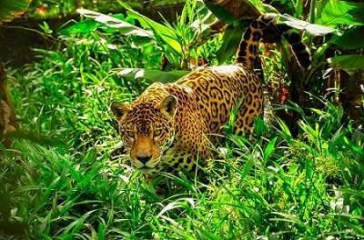
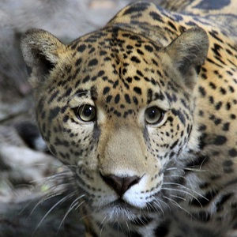

El origen de el Jaguar y el logo
Con lo que se sabe toda la idea de el maravilloso logo fue idea de el Licenciado Miguel Hisi Pedroza, asi como el significado que se le dio a esta es la de que la educacion siempre esta en constante evolucion y siempre va progresando al paso de el tiempo que esta, empezamos con la descripcion de esta.
Como se puede observar la C que este representa el colegio el cual tenemos hoy en dia, asi como el espiral, el cual significa el desarrollo continuo y ascendente como esta la fecha, asi como la B que aparece como el Bachilleres el cual es la educacion, estta conformada especificamente por dos libros con base al estudio, asi como que se muestran de perfil, asi para servir al aprendizaje, el arte, cultura, deporte, el uimaginar y soñar, el color caracteristico que tiene sgnifica los primeros años de la vida y la juventud, aunado a una renovacion de ciclica de la energia, es un simbolo que representa brevemente los diferentes valores que el Plantel muestra.
El jaguar
El jaguar es un felino grande de America y es el tercero mas grande de el mundo, son parecidos a los leopardos, pero a los jaguares los caracteriza sus manchas y el punto en el centro que suelen tener, son carnivoros y ademas de que cazan solon, son muy sigilosos con el fin de caerle encima a sus futuras presas.
Su habitad son en bosques tropicales densos, bosques lluviosos y bosques de montaña, de pino-encino, caducifolios asi como en zonas pantanosas y manglares, actualmenente en Mexico los estados en donde se encuentran poblaciones mas importantes de Jaguares son en Campeche, Chiapas y Quintana Roo, asi como sus zonas Protegidas y areas naturales como la Biosfera de Calakmul en campeche y la Reserva de la Biosfera Sian ka'an en Quintana Roo
Como uno de los atributos a este animal se puede observar el jaguar se eligio como su mascota principal de el Colegio de Bachilleres de el Plntel Cancun Dos, asi siendo guia semestral de los alumnos, tiene simbolo de poder asi como el seguir las diferentes visiones:
- Codigo de disciplina
- Un buen perfil de egresado
- Extracto de el reglamento escolar
- Disposicion de el alumno por pasar sus asignaturas
Con ello se puede observar lo orgullosos que el Plantel cancun Dos enseña y como son orgullosamente Jaguares